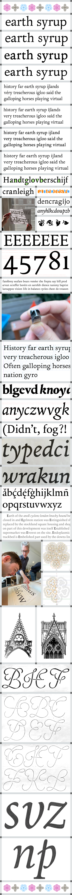
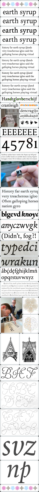

Gablet
Gablet is a fresh attempt at a classic book type. I was intrigued by the balance of convention versus character within designs for such purpose. Too much character can make for an uncomfortable read whilst too little can become tiresome. Gablet tries to nestle itself into this fuzzy limbo, conveying its message clearly and coherently. The family features a number of weights as well as playful assortment of ornaments, fleurons and titling initials to enhance the typographic possibilities. Meant to be read, what more can be said?
Jacob Wise
Jacob is a graphic and type designer based in the beautiful city of Rotterdam. Originally from England, he studied at Kingston school of Art before moving to Munich to work at the graphic design studio Bureau Borsche. Since 2019 he has been living in Rotterdam and freelancing full-time, splitting his time between graphic design work and publishing typefaces on his own type foundry WiseType. In his free time he enjoys engaging in weather related small-talk, cracking open a ‘cold one’ on a hot day, and listening to his beat up collection of UK rave bangers.
Overview


Process
To kick off the project, I sought advice from experienced book designers including Françoise Berserik and Karen Polder, to better understand their own preferences and considerations for book typography. Initially my research was broad covering papers on legibility, summaries on classic book-types and my own analysis of existing book faces. This gave me a good oversight of the topic which I could then knuckle down and start sketching within.
At this early stage, I was more concerned with developing a rough foundation that I could build upon rather than getting bogged down in detail. When sketching I would develop an assortment of letters (usually on the iPad for speed) and then individually set them into short paragraphs to be printed at reading sizes to see how they would function at the target size. After countless tests with this method, I decided on one draft to use as a rough armature to mould my design around. Early digitisation was also important as it allowed me to quickly adjust proportions and experiment with tracking, glyph scaling, adding stroke to make macro judgements.
Although Gablet was primarily an exercise in learning how to design a text typeface, it certainly allowed enough room to develop a distinct character which was led by my own preference for classic book types. The typeface was charged with a dynamic complexity of shape, offering clues to its underlying calligraphic foundation whilst retaining a crisp contemporary feel.
Stifling the urge to be more opulent was a challenge. Too much quirk and a typeface can become overpowering for continuous reading, too little and the experience becomes rather dull, leading the eye to wander off the page and out the window to the cooing pigeons rutting on the balcony... My expressive sanctuary came in the form of a set of titling initials which were unashamedly flamboyant and wild in construction. These would be handy for drop caps, initials or monograms.
Along with the initials, I also worked on a set of ornaments. Some of these used a similar fluid stroke construction with a nod to the more illustrative script-work of Jan van de Velde. Others were based on the rounded shapes of gothic rose widows which helped further imbue the typeface with character and a sense of narrative.
Gablet is by no means a finished project and is still very much a work in progress. It’s gone through a great deal of development since graduating thanks to a well needed break from it (and a fresh pair or eye’s). Development continues gradually and steadily... It will be finished... eventually... even if it does send me to an early grave.
 
